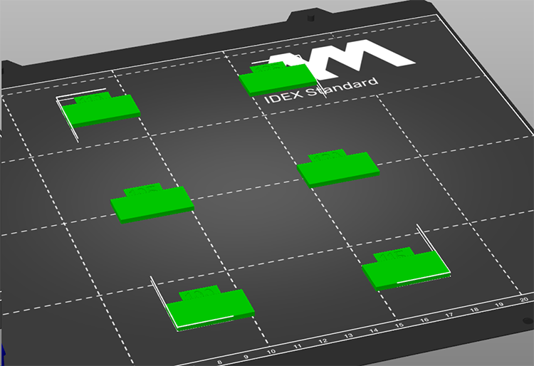

Beispiel:


Kalibrierung des Überbrückungsflusses |
|||||
|
Sie müssen die Kalibrierung des Filamentflusses und des Brückenflussverhältnisses vor dieser Kalibrierung durchführen. Es ist besser, wenn Sie auch die Kalibrierung der Filamenttemperatur durchgeführt haben.
Bei dieser Kalibrierungsmethode werden Testmuster mit verschiedenen Überbrückungsraten zwischen 100% und 125% gedruckt. Wählen Sie den niedrigsten Wert, bei dem die Oberfläche glatt ist und keine rauen "Löcher" entstehen. Beginnen Sie mit der Überbrückungsfluss-Kalibrierung.
|  |
Wenn die Überbrückungskalibrierung nicht schlüssig ist (gleiche Löcher bei allen Proben), dann stellen Sie sie auf 110% und verwenden Sie die Top-Flow-Kalibrierung. Diese Einstellung ist etwas unberechenbarer, daher ist es am besten am besten nicht zu weit von 100% abzuweichen..
|
|
|
|
|
| Nicht flach | Nicht flach | Nicht flach | Flach | Flach |
Hier sehen wir, dass Artefakte vorhanden sind, bis der Überbrückungsfluss auf 115% gesetzt wurde. Es war flach bei der Kalibrierung des Flusses, und wenn es jetzt nicht so ist, liegt das daran, dass die Brücken unter den Oberseiten ein wenig ab, und somit mehr Volumen übrig bleibt, um es anschließend zu füllen. Hier sollte 115% ausreichend sein, aber 120% ist eine sichere Einstellung.
Lizenz für die für diesen Kalibrierungstest verwendeten Modelle: CC BY-SA 3.0